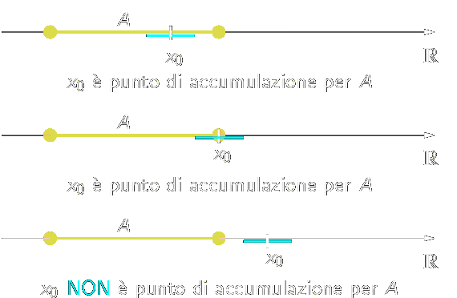

Topologia
We call a subset A of real line an interval if, whenever we have distinct point a,b ∈ A, then all points which are greater than a and less than b also lie in A.
Definition 2.10.1. Let a and b two real numbers such that a ≤ b. We call closed interval the set
[a,b] = {x ∈ ℝ | a ≤ x ≤ b}
If a < b, we call open interval of extremes a and b, the set
(a,b) = {x ∈ ℝ | a < x < b}
An equivalent notation for this set is ]a,b[. □
It's possible to exclude from the interval one extreme, obtaining the semi-opened interval to the right of extremes a and b
[a,b) = {x ∈ ℝ | a ≤ x < b}
or semi-opened interval to the left
(a,b] = {x ∈ ℝ | a < x ≤ b}
The intervals presented above are all example of bounded intervals; There are also unbounded (or infinite) intervals;
Definition 2.10.2. We define the infinite intervals
(a, ∞) = {x ∈ ℝ : x > a},
[a, ∞) = {x ∈ ℝ : x ≥ a},
(−∞, b) = {x ∈ ℝ : x < b},
(−∞, b] = {x ∈ ℝ : x ≤ b},
(−∞, ∞) = ℝ.
In particular if a = b, we have a degenerate interval; A singleton {a} is a degenerale interval. □
The symbol −∞ and +∞ do not indicate real numbers; they allow to extended the ordering of real numbers with the convention that −∞ < x and x < +∞ for each x ∈ ℝ. In some cases we set
(−∞ , +∞) = ℝ
Si può dimostrare che gli intervalli, limitati o illimitati, sono tutti e soli i sottoinsiemi I di ℝ che soddisfano la seguente proprietà caratteristica (detta connessione): presi comunque tre numeri reali
x1 < x2 < x3, se x1,x2, x3 ∈ I, allora x2 ∈ I
Nel seguito capiterà di considerare il prodotto cartesiano di due (o più) intervalli, cui si può dare il significato geometrico di rettangolo (in due dimensioni) o parallelepipedo (in tre dimensioni).
Definition 2.10.3 Siano x0 ∈ ℝ e r >0. Si chiama intorno di centro x0 e raggio r, l'intervalllo aperto (x0 − r, x0 + r). Si ha
(x0 − r, x0 + r) = {x ∈ ℝ: x0 − r < x < x0 + r} =
{x ∈ ℝ: − r < x − x0 < r} =
{x ∈ ℝ: |x − x0| < r}
Talvolta denoteremo questo intorno con il simbolo Ir (x0).
Si chiama intorno destro di x0 di raggio r l'intervallo aperto (x0, x0 + r).
Si chiama intorno sinistro di x0 di raggio r l'intervallo aperto (x0 − r). ■
Punto di accumulazione
Definizione 2.10.4 (Punto di accumulazione). Sia A ⊆ ℝ. Diremo che x0 ∈ ℝ è un punto di accumulazione di A se ogni intorno di x0 contiene punti di A distinti da x0 stesso, cioè ∀δ > 0 si ha [(x0 − δ, x0 + δ) \ {x0}] ∩ A ≠ 0. □
Esempio 4.2 Consideriamo l'insieme
A = {1/n : n ∈ ℕ, n ≥ 1}
Allora 0 è un punto di accumulazione di A pur non essendo un punto di A, in quanto a un suo qualsiasi intorno Ir(0) = (−r,r) appartengono tutti gli infiniti elementi 1/n dell'insieme A per cui è 1/n < r. Ogni altro punto x ≠ 0 (v. fig. per es., x = 1/3) non è di accumulazione, dato che si può sempre determinare un suo intorno che non contenga (altri) punti di A ■
Come altro esempio, se A = (a,b) \ x0 con x0 ∈ [a,b], allora tutti i punti dell'intervallo chiuso [a,b] sono di accumulazione per A; in particolare x0, pur non appartenendo ad A, è di accumulazione per A.
Definizione 2.10.5. Un punto a, appartenente a un insieme A ⊂ ℝ, è detto isolato quando non è di accumulazione per A, ovvero quando esiste un suo intorno al quale non appartiente alcun altro elemento di A. □
Remark. If x0 is an accumultaion point of A ⊂ ℝ, then for each ε > 0 the intersection Bε(x0) ∩ A is infinite. That is the definition implies that every neighborhood of x0 contains an inifnite number of points of A. For if on the contrary it only contained a finite number of points of A, say a1, an, we could find a smaller neighborhood of x0 that does not contain a1, an as indicated as follows.
________(____a2____a3__(x0)___a1_____)___
Intuitively this means that by zooming in an infinite number of times at x0 we continue to see points of A (different from x0) at all magnifications no matter how deep you zoom in.
If we reformulate the definition to include this; we can drop the clause excluding x0: x0 is an accumulation point of A if every neighborhood of x0 contains infinitely many points of A.
To clarify the definition of accumulation point, examine the following cases:
The set {1,1/2,1/4,...} has 0 as accumulation point; in fact 0 is the only accumulation point of this set. The set of integers ha no accumulation point, for no number has infinite number of integers nearby.